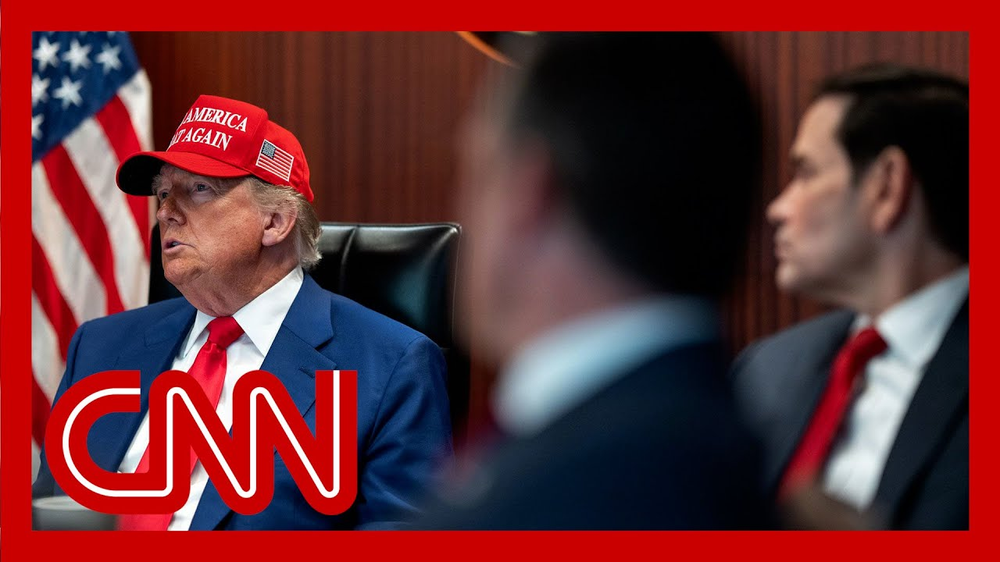

【特朗普提及伊朗"政权更迭" 德黑兰誓言报复】
Summary: The Pentagon assesses damage to Iran's nuclear program after strikes, with satellite images showing craters at Fordow and Isfahan sites. Trump suggests regime change but aides deny it, while officials claim strikes "obliterated" facilities though full damage remains unclear.
摘要： 五角大楼评估空袭对伊朗核设施的破坏，卫星图像显示福尔多及伊斯法罕核设施出现弹坑。特朗普暗示政权更迭但幕僚否认，官员称打击已"摧毁"核设施，但实际破坏程度尚不明确。

⏱️ Estimated Reading Time: 10 min
📚 六级生词 📚 雅思生词 📚 托福生词 📚 专八生词 📚 SAT生词 📚 考研生词 📚 GRE生词 📚 高考生词
Meanwhile, the Pentagon trying to learn the extent of the damage to Iran's nuclear programme after these weekend strikes.
与此同时，五角大楼正试图了解周末空袭对伊朗核计划造成的破坏程度。
The Chairman of the Joint Chiefs and Staff says it is way too early at this point to determine if Iran still has nuclear capabilities.
参谋长联席会议主席表示，目前判断伊朗是否仍具备核能力为时过早。
What's in an analysis of these satellite photos found that the attack on Fordot, for example, that nuclear facility there left behind at least six large craters.
卫星照片分析显示，例如对福尔多核设施的袭击至少留下了六个大型弹坑。
That's where the uranium, highly enriched uranium is supposed to be stored.
该地点本应是储存铀（尤其是高浓缩铀）的场所。
They're likely from the US bunker buster bombs which are designed to go deep these craters before detonating underground.
这些弹坑很可能来自美国钻地弹，这种炸弹设计为深入地下后才引爆。
The ISFAR Han nuclear complex, Iran's largest and where the R&D facilities are most importantly was hit by more than a dozen Tomahawk cruise missiles.
伊朗最大的伊斯法罕核设施（其研发设施最为关键）遭到十多枚战斧巡航导弹袭击。
And now President Trump talking about regime change in Iran.
而此刻特朗普总统正谈及伊朗政权更迭。
Brian Todd live in Washington with more.
布莱恩·托德在华盛顿为您带来详细报道。
Right, Becky, the messaging from Washington is so critical in these hours right after those air strikes on Saturday and the messaging from President Donald Trump in particular.
没错贝基，周六空袭后这几小时里华盛顿的讯息传递至关重要，尤其是特朗普总统的言论。
So critical.
极其关键。
This is what the messaging says coming from the President Sunday evening and into this morning.
以下是总统从周日晚间到今晨传达的讯息。
First, as you mentioned, the idea of regime change, the President posting on truth social this, quote, it's not politically correct to use the term regime change.
首先如你所提的政权更迭概念，总统在Truth Social发文称"使用政权更迭这个词不够政治正确"。
But if the current Iranian regime is unable to make Iran great again, why wouldn't there be a regime change?
但若当前伊朗政权无法让伊朗再次伟大，为何不能进行政权更迭？
And then he'd put the phrase mega for make Iran great again.
随后他用MEGA缩写代指"让伊朗再次伟大"。
Now the President did not specifically say the US would enact regime change in Iran.
总统并未明确表示美国将在伊朗实施政权更迭。
And two of his top aides, Defense Secretary Pete Hegsuth and JD Vance, the Vice President, have flat out said on Sunday that that was not the plan.
其两位高级助手——国防部长皮特·赫格苏斯与副总统JD·万斯周日明确表示这并非计划内容。
Take a listen.
请听这段。
This mission was not and has not been about regime change.
此次任务从未涉及政权更迭。
The President authorized a precision operation to neutralize the threats to our national interests, posed by the Iranian nuclear program.
总统授权精确行动以消除伊朗核计划对我国利益的威胁。
Our view has been very clear that we don't want a regime change.
我们立场很明确：不寻求政权更迭。
Meanwhile, the President and his top aides are expressing supreme confidence that these air strikes were successful in at least degrading Iran's nuclear program.
与此同时，总统及其高级助手坚信空袭至少成功削弱了伊朗核计划。
And here's what the President said about that late Sunday evening in another post on truth social, quote, monumental damage was done to all nuclear sites in Iran as shown by satellite images.
总统周日晚间在Truth Social另一篇帖文中称："卫星图像显示伊朗所有核设施遭受巨大破坏"。
A obliteration is an accurate term.
用'湮灭'形容很准确。
The white structure shown is deeply embedded into the rock with even its roof well below ground level and completely shielded from flame.
图中白色建筑深嵌岩层，屋顶远低于地平面且完全防火。
The biggest damage took place far below ground level.
最严重破坏发生在地底深处。
The President wrote and then he said bullseye with exclamation points.
总统写道，随后用感叹号强调"正中靶心"。
Now what he's referring to as far as that structure, he's talking about satellite images of a structure inside the Fordo nuclear enrichment site in Iran, which the U.S. struck on Saturday.
他所指的建筑是周六美国空袭的伊朗福尔多铀浓缩厂区内结构的卫星图像。
This is a before image and there's the after image with those impact craters.
这是空袭前图像，而这是带有弹坑的空袭后图像。
The President referring to that white structure that white building that he says was underneath a lot of rock.
总统提及那座被大量岩石覆盖的白色建筑。
And there are the impact craters presumably from those bunker buster bombs that were dropped.
这些弹坑很可能是投掷的钻地弹造成的。
Now we do have sound clips from both from President Trump from Pete Hexeth and from the joint chiefs of staff chairman General Dan Cain.
现在我们掌握特朗普总统、皮特·赫格苏斯及参谋长联席会议主席丹·凯恩将军的音频片段。
Two of the three of those gentlemen used the term obliterated.
其中两人使用了"湮灭"一词。
Take a listen.
请听这段。
Iran's key nuclear enrichment facilities have been completely and totally obliterated.
伊朗关键铀浓缩设施已被彻底完全湮灭。
Iran's nuclear ambitions have been obliterated.
伊朗的核野心已被粉碎。
Final battle damage will take some time, but initial battle damage assessments indicate that all three sites sustained extremely severe damage and destruction.
最终战损评估需时，但初步评估显示三处设施均遭受极其严重的破坏。
Despite the use of the term obliterated and the other expressions of confidence there from those three gentlemen, we do have to say that according to our correspondent, our colleague Katie Bolillas, U.S. officials say it is still too early to have a completely accurate picture of the damage done to those three facilities, Fordo, Natons and Isfahan.
尽管三人使用"湮灭"一词并充满信心，但根据本台记者凯蒂·博利拉斯的消息，美国官员表示要完全准确评估福尔多、纳坦兹和伊斯法罕三处设施的破坏程度仍为时过早。
Becky?
贝基？
Good to have you, Brian.
感谢连线，布莱恩。
Thank you very much indeed.
非常感谢。
That is Brian Todd in Washington.
这里是华盛顿的布莱恩·托德。
CNN correspondent Paula Hancock is joining me now here in Abu W.
CNN记者保拉·汉考克现于阿布扎比加入我们。
So the U.S. trying to assess what sort of impact was brought on Iran's nuclear facilities by their weekend strikes.
美国正评估周末空袭对伊朗核设施造成的影响。
Mean time, the exchange of fire and missiles between Iran and Israel continues a pace.
与此同时，伊朗与以色列的交火及导弹互袭持续进行。
What do we know at this point about targets?
目前我们对袭击目标了解多少？
Well, what we know from the Israeli side about previous targets that they have hit in Iran, we heard Fred there saying there was a fresh one in the center of Tehran, they said that overnight they had been targeting airports.
从以色列方面获悉，他们此前袭击的伊朗目标包括——正如弗雷德提到的德黑兰市中心新目标，以方称夜间袭击了机场。
They say there were six airports that they targeted.
称共袭击了六座机场。
They took out some 15 fighter jets and helicopters, which is interesting because Israel has said that they already believe they have aerial superiority across Iran.
摧毁约15架战机和直升机，这很有趣，因为以色列自称已掌握伊朗全境制空权。
They are obviously trying to secure that.
显然他们正试图巩固这点。
We know they were also targeting the missile launching sites, the production sites, which they have been doing since day one to make sure that Iran has a lesser ability to be able to retaliate.
我们知道他们还瞄准导弹发射场和生产基地——从行动首日就如此，以确保伊朗反击能力被削弱。
And they're also saying one interesting thing that they still have plenty of objectives, plenty of targets to strike.
他们还透露一个有趣信息：仍有大量待打击目标。
They are increasing the number of strikes according to the chief of staff and they are there for as long as it is necessary.
据参谋长称正增加空袭次数，且行动将持续至必要之时。
So it's clear that mission accomplished not quite, not yet, as far as Israel is.
显然对以色列而言，任务尚未完全达成。
It's concerned.
他们对此表示关注。
As you rightly point out, we just heard from Fred Plykin who's on the ground in Tehran, in Iran.
如你正确指出的，我们刚收到驻伊朗德黑兰的弗雷德·普莱金报道。
And we have just been looking at some of the images from what appears to have been a huge explosion on Sunday, but then just in the past couple of hours, a significant attack on Iran.
我们看到周日疑似大爆炸的图像，而过去几小时伊朗又遭重大袭击。
That seems to have been around the same time as Iran fired missiles at Israel.
时间点似乎与伊朗向以色列发射导弹重合。
That's right, yes.
确实如此。
We don't have the situational assessment from the military as to what exactly was hit.
尚未获得军方关于具体击中目标的情况评估。
It appears as though some did manage to get through that not all of the missiles were stopped or intercepted by Israel.
似乎部分导弹成功突破，并非全部被以色列拦截。
And this is what we're seeing over recent days that Israel is not managing to intercept all of these missiles, despite the fact that they have this very sophisticated missile defense system.
这就是我们近日观察到的情况：尽管拥有精密导弹防御系统，以色列未能拦截所有导弹。
But the fact is Israel as a whole is very well set up for this.
但事实上以色列全国对此准备充分。
They have the shelters.
建有避难所。
They have the air raid sirens.
配备空袭警报。
And so they are able to protect their citizens.
因此能保护公民安全。
Good dev you, Paula.
辛苦了保拉。
Thank you.
谢谢。